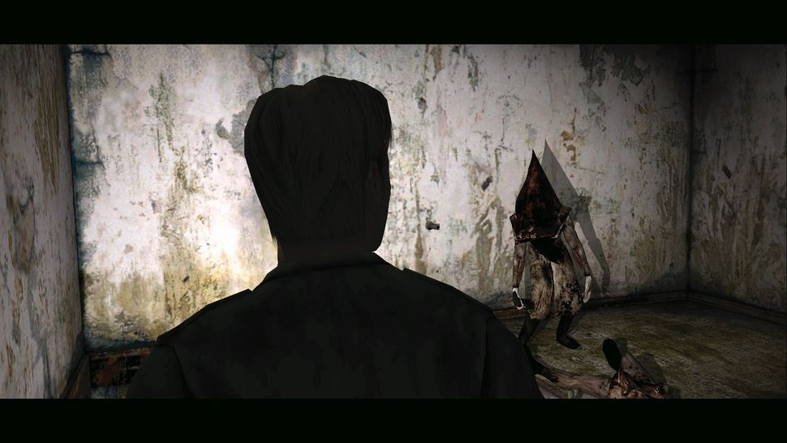
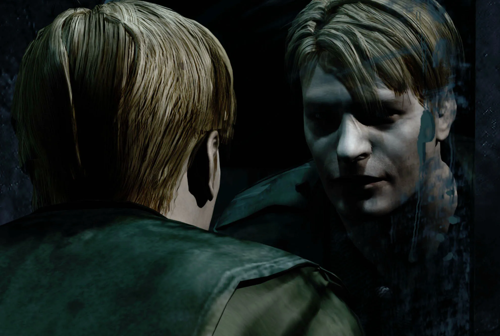
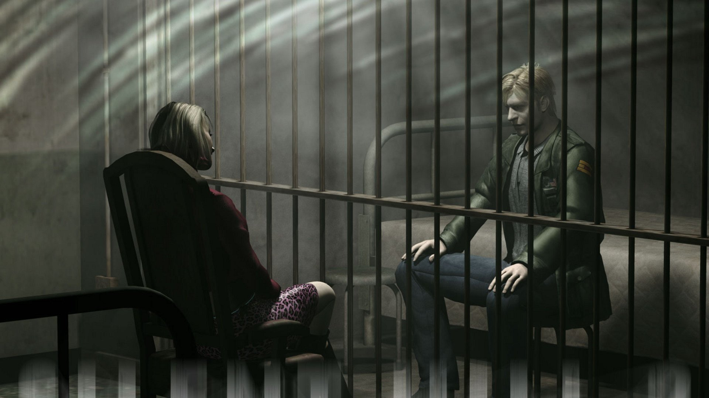

Overview
Silent Hill 2 is, in my opinion, a masterpiece of psychological horror. The game is captivating in its story, and never lets the player feel at ease around every corner. But the beauty of Silent Hill is that it doesn't throw cheap jump scares and loud noises in your face, it cleverly uses sounds, players' imaginations, and the narrative of the characters to drive its horror.
Why I Love This Game
- Incredible storyline with deep emotional connections.
- Beautifully crafted world and immersive environments.
- Replayability from the deep lore and hidden messages throughout the game.
Screenshots



